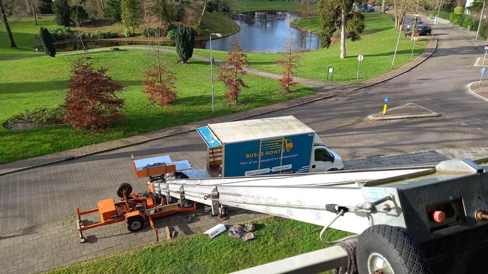

Verhuisvolume
Tel meubels, apparaten en dozen per kamer.
Open de m³ calculator →Verhuisbedrijf Houten
Gaat u verhuizen in Houten of van of naar Utrecht en omgeving? Leg beide adressen, de bereikbaarheid en uw inboedel vast en ontvang snel een persoonlijk voorstel op maat.
Lokale verhuisplanning
Houten ligt ten zuidoosten van Utrecht en valt binnen Utrecht en omgeving, het bevestigde werkgebied van Busje komt zo. Houten kent veel wijken met woonerven en fietsstraten, waardoor de loopafstand tot de voordeur en de opstelplek van de wagen belangrijk zijn. Noteer daarom de situatie bij vertrek én aankomst.
Busje komt zo publiceert geen onbevestigde wijk- of straatbeschikbaarheid. Deel uw route in de aanvraag, zodat het team de concrete situatie in Houten en Utrecht en Nieuwegein kan beoordelen.
Bekijk hoe het werkgebied wordt beoordeeld →Van vertrekadres naar aankomstadres, met toegang en loopafstand per locatie.
Vier gegevens voor een betere inschatting
Deze invoer voorkomt dat een prijs alleen op woningtype of een losse afstand wordt gebaseerd.
Tel meubels, apparaten en dozen per kamer.
Open de m³ calculator →Noteer etages, trap of lift, obstakels en de loopafstand naar het voertuig.
Vul beide adressen en de verwachte gereden kilometers in.
Geef de verhuisdatum, gewenste werkzaamheden en benodigde inzet door.
Drie routes rond Houten
Kies de route die bij uw aanvraag past. Daarna beoordeelt het team beide adressen, de bereikbaarheid en het volume.
Beschrijf vertrek en aankomst apart. Etage, lift en loopafstand kunnen per adres verschillen.
Geef ook de aankomstzijde volledig door, zodat toegang en verkeersruimte kunnen worden beoordeeld.
Laat de volledige route beoordelen; de afstand alleen bepaalt de inzet niet.
Direct contact met de eigenaar
App of bel ons rechtstreeks, of stuur uw verhuisdetails via de aanvraag. Vrijblijvend en zonder wachtrij.

Van voorbereiding naar afspraak
Bereken uw volume en geef route en toegang door. Busje komt zo stemt daarna alles persoonlijk met u af voor uw verhuizing in Houten.
Start de verhuisaanvraagBekijk het verhuizen in Utrecht →Ook in de regio
Busje komt zo werkt in Utrecht en omgeving. Bekijk een andere plaats of het volledige werkgebied.
Veelgestelde vragen
Deze antwoorden leggen uit welke informatie nodig is voor een gerichte prijsbeoordeling.
Houten ligt in Utrecht en omgeving, het bevestigde werkgebied van Busje komt zo. Deel uw vertrek- en aankomstadres, dan wordt de concrete route en beschikbaarheid beoordeeld.
De prijs hangt af van uw volume, route, toegang en gewenste hulp. Bereken eerst uw m³ en vraag een vrijblijvend voorstel aan; u hoort snel waar u aan toe bent.
Ja. Zowel een verhuizing binnen Houten als van of naar Utrecht en omgeving is mogelijk. Vul beide adressen in zodat de afstand en toegang worden meegenomen.
Gebruik de m³ calculator om meubels, apparaten en dozen per kamer op te tellen. De uitkomst is een indicatie die u meeneemt naar de offerteaanvraag.
Ja. U ontvangt een voorstel op maat en beslist daarna zelf of u ermee verdergaat. Busje komt zo bepaalt de inzet.